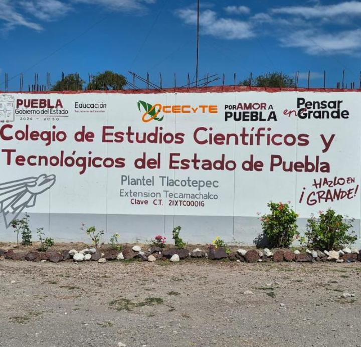

El Plantel Tlacotepec del Colegio de Estudios Científicos y Tecnológicos del Estado de Puebla se encuentra en Calle de las Flores, Diag. 23 Norte, Tepanacaxco, Sección Sexta, Barrio San Lucas, Tlacotepec de Benito Juárez, Puebla, C.P. 75680. Su número de teléfono es 237.100.6156. Este plantel ofrece diversas carreras, incluyendo Técnico en Inteligencia Artificial y Técnico en Procesos de Gestión Administrativa. Además, se dedica a brindar una educación integral y moderna a sus estudiantes.
